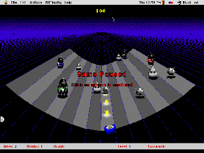

"Parasitic Interventions: Game Patches and Hacker Art"
"This page has been constructed to allow you to get some of the cool add-ons that I have collected over the years. All the files are shareware and can be freely distributed provided they are not used for capital gain. The usual shareware jargon."-Intro to a Doom wad maker’s home page
Beginning with add-on levels for bloodthirsty first person shooters a new kind of popular art form has emerged on the Internet that fuses the tactics of the hacker with the sensibility of the avid gamer. A patch (or a skin, a wad, a mod, a map or a shape) is an add-on to an existing game engine that alters the original code or state of a computer game. A patch can range from a simple repair of an error in the original game to elaborate manipulation and customization of graphics, sound, game play, physics, code, architecture or other attributes of the original computer game.
Lets time travel a bit further back than 1990’s game patching to highlight some key moments in the history of computer hacking when the desire to play games and hacking converged. As described in admittedly U.S.-centric chronicles of hacker history such as Steven Levy’s Hackers, at MIT in the early 1960’s a group of "hacker/programmer" undergraduate students would sneak access to monolithic mainframes to write "frivolous" programs such as "expensive calculator" and "expensive typewriter". One of these playful hacks was "Spacewar", a space opera inspired game programmed on the then new PDP1, the first mainframe that used a keyboard rather than punch cards for input. Spacewar is credited as the first computer game."Spacewar" displayed player scores in octal and adapted an "expensive planetarium" program to simulate stars in space. Slug Russell’s illicit "Spacewar" quickly spread to other mainframe research centers and mutated into other free computer games for privileged researchers and students. (Later computer games became big business when they moved from mainframe computers to console platforms like Atari and pinball-like arcade machines like "Pong".)
Again a confluence of hacking and gaming surfaced in the late 1970’s San Francisco Bay Area bootstrapping activities of the Homebrewer Computer Club. At the Homebrewers’ club, hardware hacking played an integral part in further developing the personal computer and the "hacker ethic", the creed that, among other things, advocates free distribution and access to knowledge. Hardware hackers, living in the Silicon Valley region of California, would gather at the Homebrewer’s Club to share design plans and garage-made prototypes for personal computers, (many of these hackers had day jobs at large computer firms like IBM in the region who specialized in building expensive powerful business computers .) In the Homebrewer Computer Club Newsletter, the printing of a Steve Wosniak report of early plans for the Apple included the following wish for a game hack: "..have TVT of my own design…have my own version of Pong, a video game called breakthrough, a NRZI reader for cassettes very simple!"
In the 1980’s, when a number of high school students gained access to their own personal computers, hackers formally untrained as programmers developed strategies for decryption of Atari chips and created games that simulated popular arcade games, such as "Jawbreaker", an adaptation of "Pacman " created for the AppleII. Some of these hackers then went on to work for PC game development companies such as Sierra Online, designing innovative yet graphically limited 1980’s style games for PC’s.
Figure 1. Castle Wolfenstein, an early 3-d shooter(c.1992)
In the mid to late 1990’s, the mutability of software on the PC platform (as opposed to the closed source code of concurrently popular games on consoles platfroms like Nintendo and Playstation), allowed for game software engine hacks or "patches" in the 3-D shooter genre. To recount a brief history of patching, in 1994 ID software released the source code for Doom, a 3-d tunnel networkable shooter game, (one year after their release of the game commercially.) Avid players of Doom got their hand on this source code and created editors for making custom Doom levels or what were referred to as "wads." In 1996 Bungie software bundled the Marathon series games with Forge and Anvil, game editing software for map making and inserting new textures, character (sprite) animations, sounds and physic properties.
Also incorporating patching into their business plan, ID software open sourced the files to the shooter Quake, (Quake patches are known as "mods"), released a CD of patches for Quake, along with numerous "Mission Packs", new game scenario plug-ins that mimic the logic of patches(but are not free). For Quake 3 ID software released a sophisticated editing software called "Radiant," a tool for detailed construction of 3-D levels for Quake. Another tool made outside of ID, called World Craft, is also popular among game modifyers and patchers of Quake and Quake engine derived games like Half-life. Worldcraft originated as a shareware editor coded independently by Canadian programmer Ben Morris, (also the previous creator of a well respected shareware Doom editor). Game patching software or game SDK’s (Software Development Kits) have been developed for shooter games such as Duke Nuke-em, Unreal, and Tribes.
A special tool set or SDK for modifying a game is not required if you can decompress the original game files and replace the existing surface textures, characters, and sounds with your customized files. If the file names remain the same, the software engine wont know the difference between the original files and your customized files. Or you may even be able to access the game engine source code and alter it. But editing tools are helpful for building new 3-Dimensional architectural spaces, (maps and levels), and 3-D characters, (models) . New versions of game modification tools are becoming even more like the sophisticated software applications that 3-D modelers use such as 3-D Studio Max.
Contrary to what might be supposed, unsanctioned and sanctioned game patching and modification do not conflict with the commercial interests of the game software industry. In effect, game patching serves as inexpensive R & D for new trends in computer gaming that crystallize and evaporate in the accelerated, perpetually mutating laboratory of the Internet. Also, in the near future, the ability to customize game worlds may be one of the strong attractions to playing (and buying) PC games, a competitive advantage over games on closed source (unmodifyable) console platforms like Playstation and X-Box.
Network topologies
"Every enemy is represented here in the zoo. Find the keys in succession. Be careful not to scare up too many of them at one time."
–advice for the "Zoo" wad for Doom from a Doom fan home page
"WELL Hey! My name is Kevin Conner, and I play Quake2, Half-life and any good game out there. I am an artist of many mediums; oils, acrylic, watercolor, pen and ink and of course...QUAKE2SKINS!! Here on this page I shall have some links and some skins that I have made as well as an occasional sampling of my traditional art work...I'm sure you'll find my skins very unique... DOWNLOAD THEM! I'd love to see them on others while i am FRAGGING them ..eheh thank you and good night!"
-Intro to a skinner page
The Internet has become the locus for computer gaming fan and hacker's exchange of patching, secrets, game guides and "Easter eggs." These hermeneutics of computer games, the distribution of guides to successful level completion, and of clues to finding secrets embedded in the game architecture, have encouraged the development of an information exchange infrastructure which also provides the necessary support venue for the distribution of game patches. Following the hacker ethics of shareware, freeware, and open source code, the game patch artist will usually offer his work free of charge from his personal home page or gaming site. "His" work is usually the appropriate gender to describe a game patch artist since the majority of game patchers are male ranging from teenage boys to 35-year-old men (although you never can be too certain of gender on the Internet). Traversing deeper into the Internet topology of the primarily male arena of game fan and hacking network culture reveals subsets of differentiated discourse domains.
"A ring is a circular collection of sites all focused on a related topic. Each member of the ring typically displays a graphic, called a ring fragment, that will allow visitors to move forward and backward through the ring." -Definition of a ring from the
Quake Engine Skin Artist ring site
Internet rings connect gamer web sites one to the other along vectors of related topics through links that move sequentially from one site to the next, horizontal micronetworks that etch data splines onto the more haphazardly hyperlinked architecture of the Web. It is also common to find a link on a ring member site to an overview index to all the sites belong to that particular ring. One popular ring is the Quake Engine Skin Artist ring, including links to sites like the "Skin Factory" and "Skins by DoodsEngel." Quake Skinners are largely teenage to early 20’s boys who design 2-d monster and fighter outfits that are then mapped onto the prefabricated 3-d modeled figures in the network shooter games Quake and QuakeII. Skinning constitutes a kind of monster high fashion workshop for boys, an imaginative play with various semantic units of monster fashion that are continually reinserted into the same syntagmatic chains ; variations of head gear, human and animalian facial features, varieties of arm bands and arm muscle tone definition, varieties of fighter suits in various fabrics and colors, various weapon accessories. Skinning draws it’s monster fashion lexicon from the hybrid mythic and sci-fi sources of boy’s fantasy culture, referencing both Minotars and Star Wars characters.
Many players of network Quake belong to clans that fight as collective units against other clans on numerous Quake servers . Sites dedicated to specific clans with their trademark clan skins form other strata of network game topology that overlap with the skinner rings. Interestingly, in contrast to the more testosterone laden atmosphere of the Quake Engine Skin Artist ring, a contingent of male and female skinners and their fem skin creations have achieved quite a Web presence on the Quake Women’s Forum site where skins such as the custom female tattooed skins for the PMS (Psycho Men Slayer’s) clan are freely distributed (also available for download from the PMS clan site). The Quake Women’s Forum also features daily news of female frag fests, (network Quake games), monthly in-depth profiles of women Quake players, e-mail address of female Quake players and shorter profiles of over three hundred Quake women players.
Figure 2. PMS skins for QuakeII by PMS’ Georgina
(mapped onto standarad QuakeII female 3-d model)
Some game patches offer more seditious mutations of computer game subject/avatar configurations. Patches such as the "Fighter Chicken" for Doom and the "Gumby Doll" patch for Marathon Infinity replace macho soldier characters with silly androgynous characters, undermining the male macho hero ideal common to many computer games. Early patches with female heroines like the "Female Cyborg Patch" and the "Tina-bob" patch for Marathon were among the first patches to offer active female avatars (in place of trophy princesses) for game play in shooters, prefiguring the official release of Tomb Raider and other recent action adventure games with female heroines. Despite the sometimes problematic aspects of female avatar representation and implementation in both patches and official games as seen from the perspective of traditional feminist film theory and other feminist positions, the appearance of female avatars is a significant addition to the field of possible gender/subject avatar configurations between both female and male players and their avatars. (Who will deny me the abject pleasure, perhaps a queer one, in relishing in my avatar’s ultra-fem proportions as she frags my male opponent into spattered bloody pixels or that my male opponent has not learned something by trying on a female skin?)
Game Patches as Hacker Art
Often a web search for game add-ons yields infinite subtle variations of game atmosphere, weaponry, lighting and effects. More interesting than these elegantly crafted modifications (which usually cannot compete with the industrial game level design of the original game engine anyway) are the patches which hack the culture of the game, interventions that offer an unexpected perversion of the accepted semiotics of game worlds and game play. In the fall of 1998, after a few years of immersion in Silicon Valley computer gaming geek culture and a more recent exposure to game patching, it occurred to me that it would be interesting to organize an on-line exhibit of game patches. I was interested in inviting artists to create game patches as well as exhibiting some of the more unique and subversive game patches already floating around the web. I contacted a number of game software companies and found one that was willing to donate games and patching software to the artists (Bungie Software, makers of Marathon Infinity and Myth). I released a "Call for Submissions" on the Internet and over the next few months received responses from a diverse range of international artists.

Figure 3. "BlackLash" by Richard-Pierre Davis from Mongrel
One of the earlier entries was submitted by "Mongrel," a London based artist collective whose work confronts issues of technoculture and ethnicity . "BlackLash" is a shoot-em up hack in the style of a 2-D 1980’s space shooter, however, instead of shooting down scrolling space ships, the player blasts attacking Klu Klux clan modules to smithereens. The BlackLash player chooses to identify with either a "Professional", "Crime Lord", "Lover", or "Dry-Cleaner" avatar. Blacklash humorously deploys this cast of afro-urban characters against America’s infamous club of southern rural racists.
Rtmark’s "Simcopter" is a hack at a deeper level than your typical patch, akin to a hyperbolic overgrown "Easter Egg"(unauthorized secret jokes commonly embedded in software by it’s own programmers). While in the process of writing the code for Simcopter, the official programmer for Simcopter, (also a member of the anonymous art collective rtmark), replaced the token female bimbos in bikinis with boy bimbos in bikinis, thereby dismantling the heterosexist reward system prevalent in most computer games and replacing it with a queer friendly token system(assuming most Simcopter players are male). He apparently intended for his boy bimbos to only make rare appearances but they began to surface more often than not, which eventually led to his termination as a Simcopter employee.
Josephine Starrs (former member of Australian cyberfeminist art collective VNS Matrix) and Leon Cmielewski’s "Bio Tek Kitchen" patch for the Marathon Infinity engine replaces all the weapons in Marathon, commonly displayed in a window at the bottom of the screen, with cooking utensils. As the player whips monstrous tomatoes to a bloody pulp with a snapping dish towel or swats tall cucumbers with a spatula in a labyrinthine sterile kitchen, the game takes on a veneer of hysterical (and extremely humorous) feminine rage. "Bio Tek Kitchen" is unique as a patch (or a game) in utilizing the domestic feminine sphere as a setting for violent gory conflict. "Los Disneys" is an extensive patch for the Marathon Infinity engine set in a post-apocalyptic future where Disney corporation has taken over American real estate. The player begins by navigating through throngs of children, oversize Mickey Mouses , Goofies, and tourists taking harmful snapshots that feed into Disney’s security surveillance system. The substitution of soldiers and guns for tourists with surveillance cameras is a softer, more insidious experience of game attack and conflict than your typical binary shoot-em up. The player enters into a morally sticky morass as s/he blasts away tourists, Disney characters and children.
Figure 6. Emulator Patch by Matthew Shadbolt
Not all of the patches included in "Cracking the Maze" are subversive in a political sense; some offer alternatives in game ontology and aesthetics. "Ctrl_space", net.art duo jodi’s modification of the Quake engine is for network Quake and runs on a server in Hungary. "Ctrl_space" hacks the diegesis of the game environment, rupturing the 3-d Cartesian grid of the game world to reveal the "void " and the code lurking behind 3-d virtual worlds. "Ctrl_space" proposes a fragmented and abstracted means of structuring 3-d environments. Similarly, Parangari Cutiri’s "epilepsy patch" manipulates aesthetic and spatial tropes of game worlds, taking the flickering screen refresh rate to hyperbole. In the epilepsy patch, lights strobe and pixels on the walls and ceilings pulsate in patterns designed to trigger epileptic seizures. Her patch is an attempt to introduce an "epilepsy virus" that travels from a digital host to a human host, blurring the boundary between wetware and hardware.
Like the hip-hop sampler or reggae dub mixer, the game patch artist manipulates the prefab semiotics of the game engine, a kind of "versioning" that reorganizes along both paradigmatic and syntagmatic axeses. Like "hactivist" Electronic Disturbance Theater’s net.art attacks on government websites on behalf of the Zapatistas, game hacking and distribution of game hacks online are art strategies that offer the possibility for artists to participate in cultural intervention outside of a closed art world sphere . Patch art structurally couples itself in symbiotic or parasitic relations to the host technocultural systems of the industrial game engine and online game fan networks, an art form whose tentacles reach outward into the fabric of technocultural subdomains with the capacity for effecting the evolution of popular gaming culture.

Figure 6. Doom Source Code
The process of software hacking, including game software, is a non-linear multi-directional searching for loopholes and bugs through a meshwork of code (similar to the process of debugging). Take for instance the operational mode of a late 80’s "phreaker". The phreaker enters into an alien digitized phone switcher system that she did not write. Without fully understanding the mechanics of the switching program the phreaker tweaks a chunk of code here, a chunk of code there until she effects a change in the ontogenetic structure of the program. (Maybe she hooks up the number for the Christian Coalition to a phone sex line, maybe she embeds a tag in the code, a mark of her territory that later inadvertently leads to a system wide shutdown.) Or a gamer who batch processes all the texture (tga) files in a game to unknown effect, so attacking monsters morph into kittens, peace symbols, black dots, or something entirely unexpected. Likewise, culture hacking can begin with non-structured manipulation of an alien or semi-unknown cultural system that eventually effects a new system identity.
Synopsis and the Potential for Artists
Computer games and hacking share a history that weaves farther back in time than the explosion of game modification in 1990’s PC gaming. The first computer game SpaceWar was born in an exclusive hacker laboratory along with other software applications we now take for granted. This open code hacker environment at MIT later spawned the Free Software movement , precurser of open source trends and GNU/Linux operating system. Later a primary motivator among hardware hackersfor creating personal computers was the desire to play games on their own home computers. In the 1980’s cracks of Atari games inspired the development of early PC games.
Computer gaming is a popular leisure time activity, replacing television and cinema as prime entertainment, highly addictive and increasingly structuring our perceptual and interpretive frameworks; rather than virtual reality we have come to inhabit game reality. As culture hackers, artists can play an important role in shaping the emerging game spaces we will inhabit. Game patching as an art practice engenders multiplicities of gender, identity, game play, game habitats and aesthetics, a parasitic mutation of the host game engine into other possibilities. Feminist, Conceptual and Net Artists from outside of gaming culture’s denizens can apply their strategies of cultural criticism and hacktivism to the game patch arena, where their perspectives contribute to the already rich and diverse game hacks and patches proliferating across the multifarious computer gaming topologies of the Internet.
The practice of game patching as a whole enters into a mutually beneficial symbiotic relation with the computer game industry, who have only to benefit from the rapid R & D of gaming alternatives and modifications , alternatives that game developers and publishers don’t dare risk without precedent. There are already indications that game software developers who are sensitive to trends in game patching (so easily available for market research on the Internet) are able to pick up and produce patch themes as lucrative games. As a popular art form historically linked to computer hacking, game patching shares the primary principles developed by hackers and further embodied in the current open source movement; non-hierarchical , omnidirectional, open knowledge access and non-guided, emergent, evolutionary properties. Game patch artists infiltrate the source code of games to create patches and editors which they distribute as shareware to other game patch artists, participating in a network economy of exchange open to all gaming fans online. As a practice bound up with fluid multi-directional network flow, game patching blurs the distinctions between cultural producer /cultural consumer, reader /writer, artist/ viewer, game fan/game developer, programmer /hacker and all manner of distinctions between these various binary pairs. The digital folk art of game patching promises (and delivers) the "many to many" cultural production that proponents of public access cable television envisioned in the 1960’s (well , maybe there were no weapons in their visions).
Online massively multi-player RPG’s (Role Playing Games) like Ultima Online and Everquest are one gaming enclave ripe for future culture hacking. As complex immersive worlds complete with their own economies of exchange, a kind of creative coding of embedded patches for trade within the game world (as opposed to outside of it for trade on the Internet like the skins trade for network Quake) would be a welcome addition to RPG’s. Opening up the source code of RPG’s to hacking and to allow game editors to be developed for popular usage would enrich the experience of inhabiting the game world, allowing the players to "interface" with their surroundings rather than inhabiting an environment preordained by the RPG dungeon master/ deities. And, as in the case of some game patching and hacking , there is the possibility for not only modification and subversion but radical mutation into new gaming hybrids and genres.
End Notes:
1. http://homepages.enterprise.net/thump/index.htm
2. A game engine is a the basic game program which controls players movement and navigation throught the game world, lighting effects and other visuals, sound processing, and ultimately how smooth the resolution of the game is and how fast it uptdates the screen.
3. Levy, Steven, Hackers: Heros of the Computer Revolution, Dell Publishing, New York, p.47.
4. Herz, J.C., Joystick Nation, Little, Brown and Co., Boston, 1997, p.5.
5. Levy, Steven, ibid, p.247.
6. Although closed entertainment systems such as Nintendo, Sega and Sony Playstation, descendents of earlier entertainment systems such as Magnavox and Atari remain popular, especially in Japan, and their closed architecture inhibits game hacking and patching.
7. McKendles, David, "Legion of Doom", Wired Magazine, March 1998.
8. http://www.gamegirlz.com/articles/wc_001.htm
9. http://doomnation.com/tower/
10. http://www.geocities.com/TimesSquare/Dungeon/6030/
11. An easter egg is secret personal data embedded by the programmers or designers of a software application or game, often photo’s of the workers or some kind of personal "in joke" not aimed at the general consumer.
12. http://www.webring.org/cgi-bin/webring?ring=qskins&list
13. http://www.planetquake.com/QWF/qwf.html
14. http://switch.sjsu.edu/CrackingtheMaze
15. http://www.mongrel.org.uk/BlackLash
17. Morse, Margaret, "Cyberspace, Control, and Transcendence: the Aesthetics of the Virtual" in Virtualities, Indiana University Press, 1998, p. 196.
18. Hebdige, Dick, Cut’n Mix, Metheun and Co. Ltd, London, 1987, p.12.
19. http://switch.sjsu.edu/web/v4n2/contents.html
20. Sterling, Bruce, The Hacker Crackdown, Bantom Books, New York, 1992.